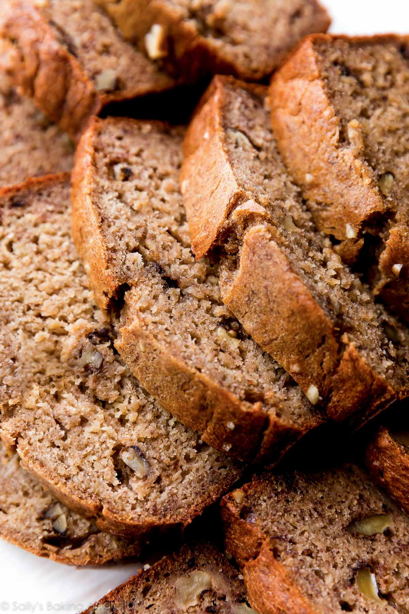

Banana Bread

My Favorite Banana Bread Recipe
With its super-moist and buttery texture, banana and brown sugar flavors, soft crumb, and 1,000+ reviews, this is a delicious AND undeniably popular banana bread recipe.
You need 4 ripe bananas.
INGREDIENTS
- 2 cups (250g) all-purpose flour (spooned & leveled)
- 1 teaspoon baking soda
- 1/4 teaspoon salt
- 1/2 teaspoon ground cinnamon
- 1/2 cup (8 Tbsp; 113g) unsalted butter, softened to room temperature
- 3/4 cup (150g) packed light or dark brown sugar
- 2 large eggs, at room temperature
- 1/3 cup (80g) plain yogurt or sour cream, at room temperature
- 2 cups (460g) mashed bananas (about 4 large ripe bananas)
- 1 teaspoon pure vanilla extract
- optional: 3/4 cup (100g) chopped pecans or walnuts
INSTRUCTIONS
- Adjust the oven rack to the lower third position and preheat the oven to 350°F (177°C). Lowering the oven rack prevents the top of your bread from browning too much, too soon. Grease a metal 9×5-inch loaf pan with nonstick spray. Set aside.
- Whisk the flour, baking soda, salt, and cinnamon together in a medium bowl. Set aside.
- Using a handheld or stand mixer fitted with a paddle or whisk attachment, beat the butter and brown sugar together on high speed until smooth and creamy, about 2 minutes. With the mixer running on medium speed, add the eggs one at a time, beating well after each addition. Then beat in the yogurt, mashed bananas, and vanilla extract until combined.
- With the mixer running on low speed, slowly beat the dry ingredients into the wet ingredients until no flour pockets remain. Do not over-mix. Fold in the nuts, if using.
- Pour and spread the batter into the prepared baking pan. Bake for 60–65 minutes, making sure to loosely cover the bread with aluminum foil halfway through to prevent the top from getting too brown. The bread is done when a toothpick inserted in the center comes out clean with only a few small moist crumbs. This may be after 60–65 minutes depending on your oven, so begin checking every 5 minutes around the 60-minute mark.
- Remove bread from the oven and allow the bread to cool in the pan set on a wire rack for 1 hour. Remove bread from the pan and cool bread directly on the wire rack until ready to slice and serve.
- Cover and store banana bread at room temperature for 2 days or in the refrigerator for up to 1 week. Banana bread tastes best on day 2 after the flavors have settled together. See post above for freezing instructions.